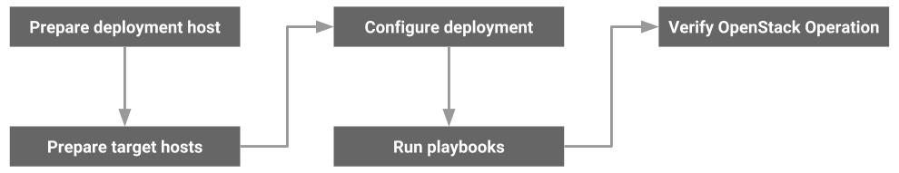

Overview
This guide refers to the following types of hosts:
- Deployment host, which runs the Ansible playbooks
- Target hosts, where Ansible installs OpenStack services and infrastructure components
Installation Workflow¶
The following diagram shows the general workflow of an OpenStack-Ansible installation. This may slightly change as per the specific deployment scenario.

Installation Requirements and Recommendations¶
Software Requirements¶
Ensure that all hosts within an OpenStack-Ansible (OSA) environment meet the following minimum requirements:
-
Ubuntu
- Ubuntu 16.04 LTS (Xenial Xerus) or Ubuntu 18.04 LTS (Bionic Beaver)
- Linux kernel version 3.13.0-34-generic or later is required.
-
CentOS
- Centos 7, fully updated.
- Linux kernel version 3.10.0 or later.
-
openSUSE
- Leap 42.X, fully updated.
- Linux kernel version 4.4.X or later.
-
Secure Shell (SSH) client and server that support public key authentication
-
Network Time Protocol (NTP) client for time synchronization (such as ntpd or chronyd)
-
Python 2.7.x
-
en_US.UTF-8 as the locale
Note
At the moment of writing this guid, the openstacl-ansible playbook deployment on CentOS 7.x and openSUSE Leap 42.x is experimental. We highly recommend using Ubuntu in your production deployment.
CPU Recommendation¶
-
Compute hosts should have multicore processors with hardware-assisted virtualization extensions. These extensions provide a significant performance boost and improve security in virtualized environments.
-
Infrastructure (control plane) hosts should have multicore processors for best performance. Some services, such as MySQL, benefit from additional CPU cores and other technologies, such as Hyper-threading.
Storage and Disk Recommendations¶
Different hosts have different disk space requirements based on the services running on each host:
Deployment hosts¶
A minimum of 10 GB of disk space is sufficient for holding the OpenStack-Ansible repository content and additional required software.
Compute hosts¶
Disk space requirements depend on the total number of instances running on each host and the amount of disk space allocated to each instance.
Tip
Consider disks that provide higher I/O throughput with lower latency, such as SSD drives in a RAID array if you use the local storage of the compute host for instance storage.
Note
If your deployment include a shared storage like Ceph you will definitely be using it in the compute host without using the local storage of the compute host for instance storage. In this case the local disk of the compute host required for host OS installation and relevant OpenStack agent installation requirements.
Storage hosts¶
Hosts running the Block Storage (cinder) service often consume the most disk space in OpenStack environments.
Tip
As with Compute hosts, choose disks that provide the highest I/O throughput with the lowest latency.
Logging hosts¶
An OpenStack-Ansible deployment generates a significant amount of log information. Logs come from a variety of sources, including services running in containers, the containers themselves, and the physical hosts. Logging hosts need sufficient disk space to hold live and rotated (historical) log files. In addition, the storage performance must be able to keep pace with the log traffic coming from various hosts and containers within the OpenStack environment. Reserve a minimum of 50 GB of disk space for storing logs on the logging hosts.
Network Recommendations¶
For the best performance, reliability, and scalability in a production environment, consider a network configuration that contains the following features:
-
Bonded network interfaces, which increase performance, reliability, or both (depending on the bonding architecture)
-
VLAN offloading, which increases performance by adding and removing VLAN tags in hardware, rather than in the server’s main CPU
-
10 Gigabit Ethernet, which supports higher network speeds and can also improve storage performance when using the Block Storage service
-
Jumbo frames, which increase network performance by allowing more data to be sent in each packet
Warning
You can deploy an OpenStack environment with only one physical network interface. This works for small test environments, but it can cause problems when your environment grows.